Curvas de nivel
Plano topográfico. Es LÍNEA, no mancha: no le come contraste al texto de encima y funciona igual en claro y en oscuro. Para obra, ingeniería o rotulación dice más que cualquier degradado.
<Backdrop type="contour" /> Kit OpsPilot · laboratorio
Cada bloque de esta página es el efecto funcionando, con el código al lado. No hay que investigar nada: se elige, se copia y esa web ya no se parece a la anterior.
01 · Fondos
Es lo primero que decide si una web parece una plantilla. Trece maneras de resolverlo. Se elige UNA por web: ahí empieza el mundo propio de cada una.
Los cuatro primeros llevan JavaScript y se cargan solos, solo si aparecen en la página. Los nueve siguientes son CSS puro: cero bytes.
Plano topográfico. Es LÍNEA, no mancha: no le come contraste al texto de encima y funciona igual en claro y en oscuro. Para obra, ingeniería o rotulación dice más que cualquier degradado.
<Backdrop type="contour" /> Miles de partículas siguiendo un campo de ruido y dejando rastro. Se pinta, se para y queda un cuadro. Distinto en cada visita.
<Backdrop type="flowfield" /> En reposo es un plano serio. Solo se revela al pasar el cursor por encima: el fondo no pide atención, la devuelve.
<Backdrop type="gridwarp" /> Campo de color con ruido deformado sobre sí mismo. Sin bandas, no se repite nunca y sale de los colores del tema.
<Backdrop type="mesh" /> Trama de imprenta que se abre bajo el cursor. En una web de rotulación no es un adorno: es el oficio.
<Backdrop type="halftone" /> El lenguaje de la señalización: obra, peligro, toldo, cinta. Tenues son textura; a todo color, un cartel.
<Backdrop type="stripes" /> Tres degradados. El fondo más barato que existe y el que más cambia una sección vacía.
<Backdrop type="orbs" /> Plano de taller. Se desvanece hacia los bordes para no encajonar el contenido.
<Backdrop type="grid" /> Textura de grabado, de billete, de lámina antigua. Perfecto debajo de una foto en duotono.
<Backdrop type="hatch" /> Papel milimetrado sin parecer papel milimetrado.
<Backdrop type="dots" /> Luz de foco, sol, letrero encendido. Un solo gradiente cónico.
<Backdrop type="rays" /> Un resplandor limpio para poner detrás de un producto o un logo.
<Backdrop type="halo" /> Como un rótulo encendiéndose de noche. Lento a propósito: si se nota, molesta.
<Backdrop type="sweep" /> 02 · Foto y fondo, la misma capa
Una foto normal es un rectángulo pegado encima del diseño: tiene su propia luz, su propio color y su propio borde. Pasada a tinta deja de ser un objeto y pasa a ser dibujo de la página — el fondo se ve a través de ella. Y doce fotos hechas con doce móviles distintos acaban pareciendo la misma mano.
Pasa el cursor por la primera: la tinta se disuelve y aparece la foto real.
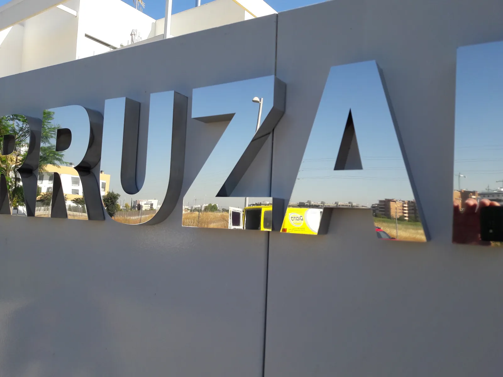
La trama de puntos de la imprenta, calculada sobre la foto. Con reveal, al pasar el cursor vuelve la original.
data-fx="ink" · mode:"dots" 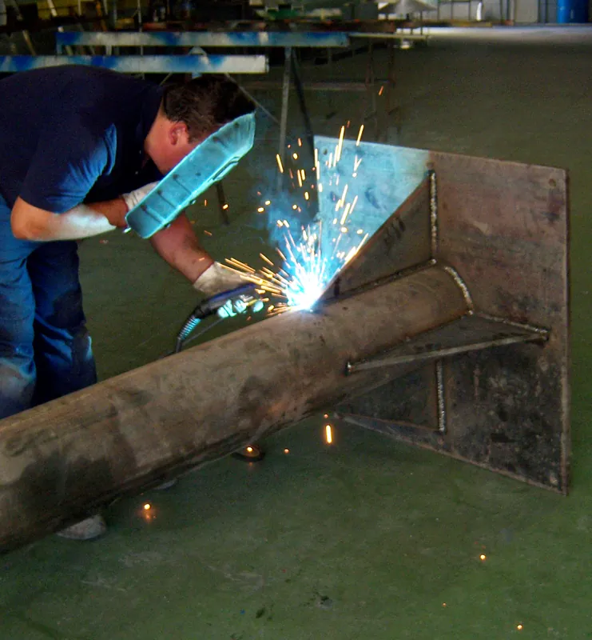
Rayado en un ángulo. Convierte cualquier foto en una lámina, y funde las luces con el fondo.
data-fx="ink" · mode:"lines" 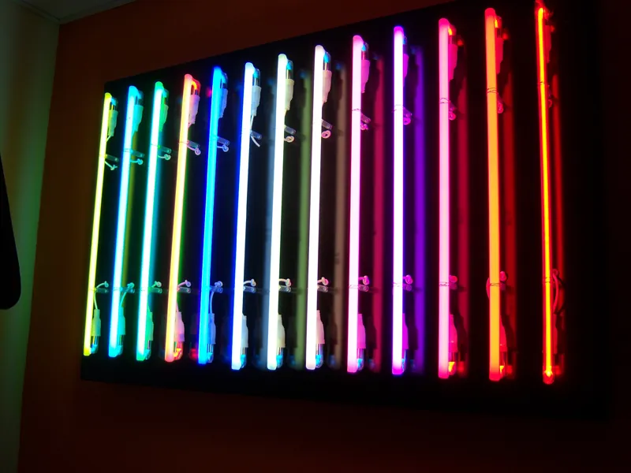
Blanco o negro, sin medias tintas. Muy serigráfico, y pesa lo que pesa un icono.
data-fx="ink" · mode:"threshold" 03 · Formas
Mientras todas las imágenes sean rectángulos con la esquina redondeada, la web parece un catálogo. Son recortes: no deforman la foto y no cuestan un byte de JavaScript.
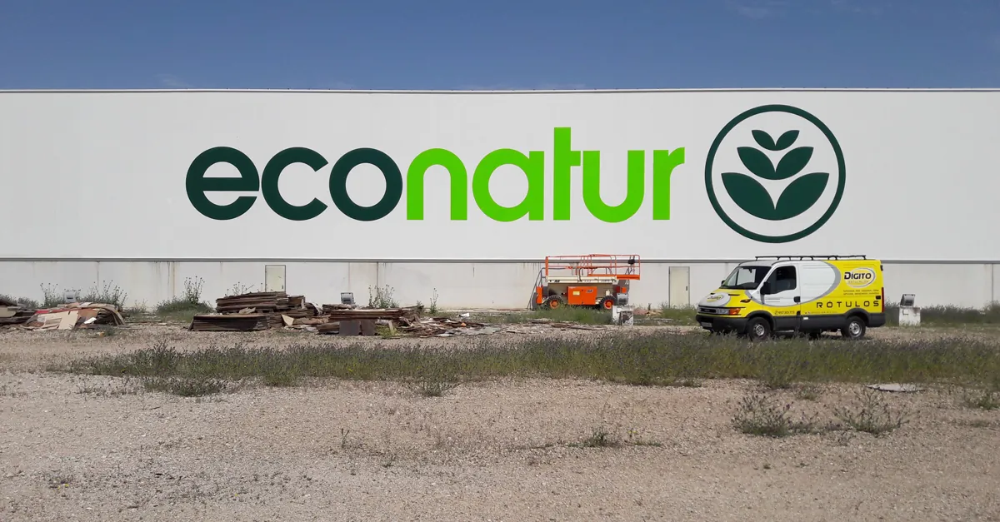
Portal, nicho, retrato. Señorial sin ser antiguo.
.fx-arch 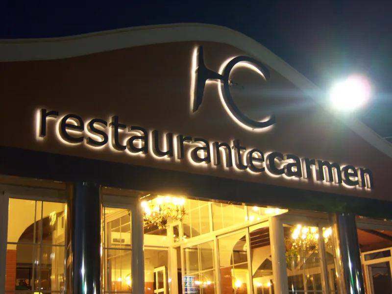
Cuatro radios distintos: nunca es un óvalo y nunca parece un error.
.fx-blob 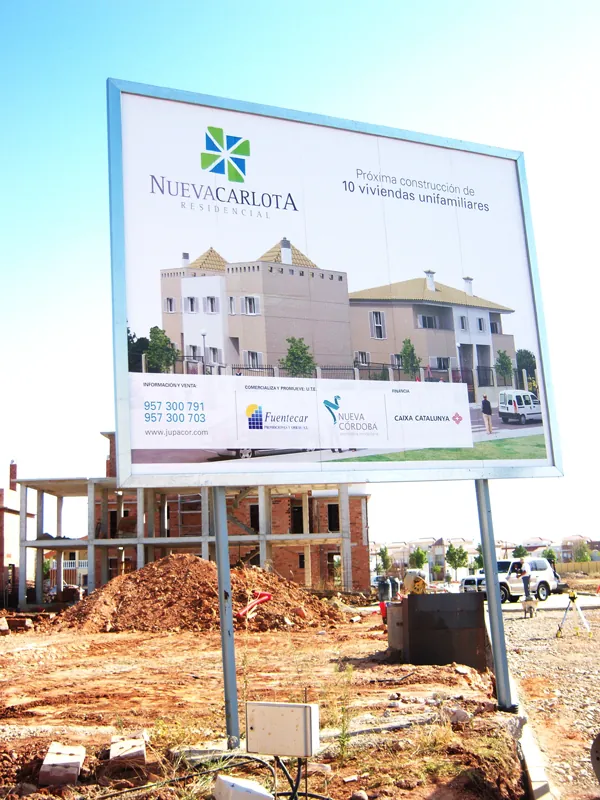
El corte de una chapa, de un cartel de obra.
.fx-notch 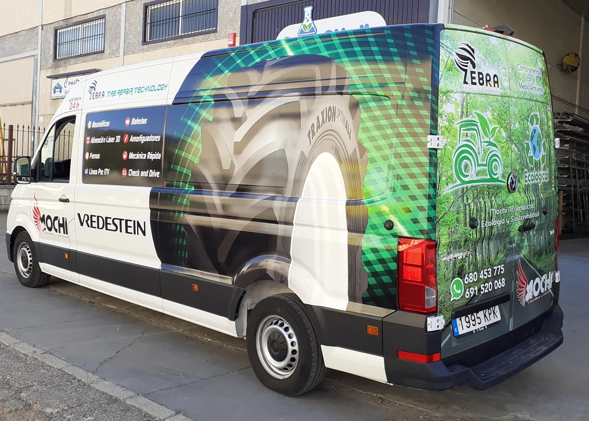
Industrial, técnico, panal.
.fx-hex La foto no termina: se desvanece en el fondo.
.fx-soft Un rectángulo de marca asomando por una esquina.
.fx-offset Capa de color en modo fusión: iguala fotos con luces dispares.
.fx-tint Se funde con el fondo por el lado que elijas.
.fx-bleed 04 · El cambio
Para cualquier oficio que transforme algo — una fachada, un local, una furgoneta — esto vende más que diez fotos sueltas.
Y no lleva librería. Es un input type="range" escribiendo una
variable CSS, así que funciona con el teclado, lo lee un lector de pantalla y, si el JavaScript no llega,
se queda quieto enseñando las dos fotos. Las versiones con librería suelen perder las tres cosas.
05 · El puntero
Mueve el ratón por aquí. Ocho trabajos enseñados sin galería, sin carrusel y sin ocupar sitio: las fotos viven en el gesto.
data-fx="trail" 06 · Fotos
Una foto dentro de un rectángulo con esquinas redondeadas es lo que hace todo el mundo. Estas seis cosas no cuestan más y cambian la página entera.
treat="duotone"bleed="b"treat="reveal"treat="parallax"treat="displace"07 · Tipografía
La foto dentro de las letras. Para un rotulista esto no es un efecto de moda: es literalmente lo que vende.
class="fx-knockout"
08 · Puntero
Tres efectos que solo escriben variables CSS: el navegador hace el resto. En móvil no se activan.
Mueve el ratón por esta tarjeta. Es una linterna sobre la fachada.
data-fx="spotlight" Seis grados. Suficiente para notarlo, poco para marear.
data-fx="tilt" Tira hacia el cursor cuando te acercas.
09 · Scroll
La sección se clava y el contenido pasa en horizontal al scrollear. Sin flechas, sin puntos, sin esperar a que llegue la foto que te interesa.
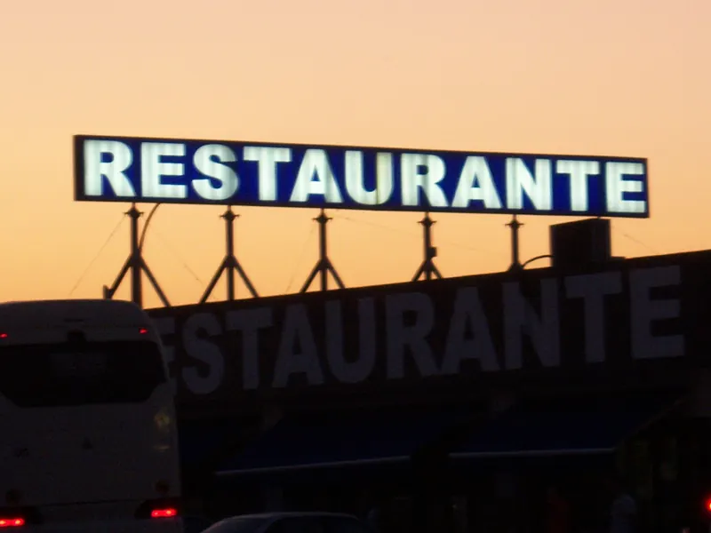

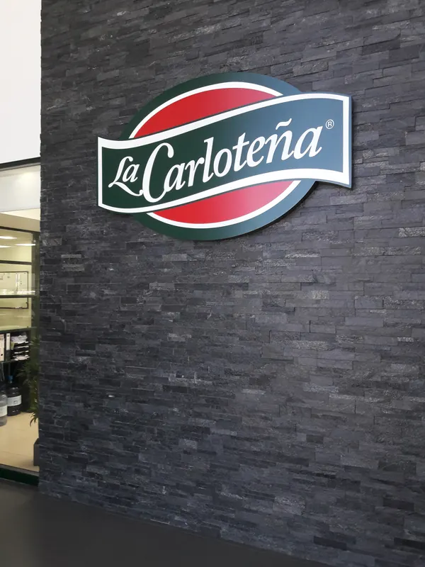
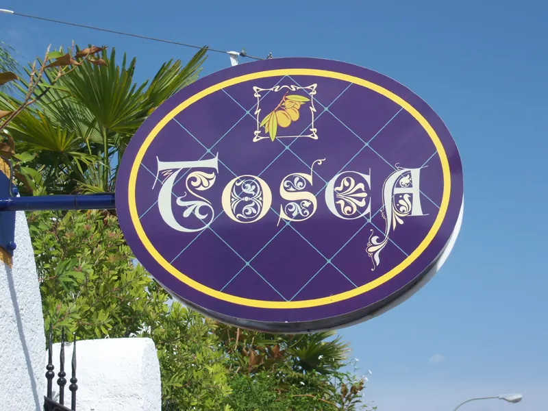

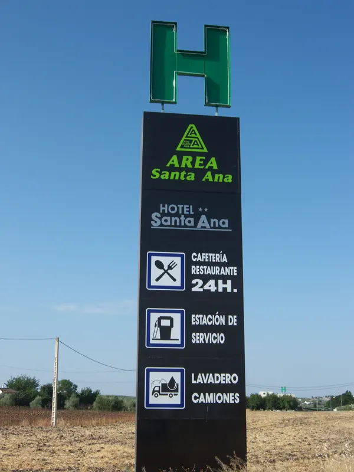
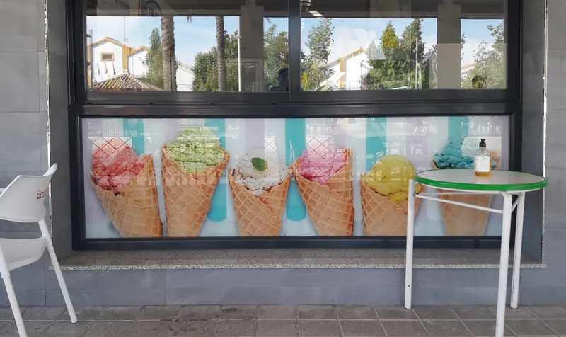
10 · Texto
GSAP SplitText, ahora gratis. Parte por líneas, palabras o letras y respeta lectores de pantalla.
data-fx="split" data-fx-opt='{"by":"words"}' 33
Para datos reales. Si el dato no impresiona, animarlo no lo arregla.
data-fx="counter" 11 · Escenografía
Un fondo no tiene por qué ser una textura. Puede ser un bloque de color recortado que parte la
sección y le da estructura: la foto lo cruza, lo pisa o se sale por el borde. Es el recurso más
viejo de la cartelería, el que más distingue una web, y cuesta un div.
Una sección, dos mundos
Y la foto cruza el corte. Eso es lo que hace que la página parezca compuesta y no rellenada: el fondo deja de ser una capa debajo del contenido y pasa a ser parte de la maqueta.
.fx-half + .fx-disc Dos colores con el corte en diagonal. El texto en un lado, la foto cruzando al otro.
.fx-half Un círculo enorme de marca. Ordena una sección él solo.
.fx-disc El mismo disco, hueco: deja ver lo que hay detrás.
.fx-disc fx-ring Una banda de color cruzando en diagonal.
.fx-band Color entrando por una esquina. Señala sin decir nada.
.fx-corner Un lado entero de color, de fondo para la foto.
.fx-column 12 · Desplegar información
Un acordeón de renglones grises no lo abre nadie. Cerrado ya tiene que decir algo: un número que convierte la lista en un índice, el precio a la vista, una línea de gancho y una foto esperando dentro.
Y va sobre <details> nativo: se abre con el teclado, lo lee un
lector de pantalla, el buscador ve el contenido aunque esté cerrado y funciona sin JavaScript. Las
cuatro cosas se pierden casi siempre al hacerlo a mano con divs.
Letras retroiluminadas o cajón de aluminio con lona tensada. Se fabrica en el taller de La Carlota y se instala con medios propios: no hay que coordinar a dos empresas.
El LED va sobredimensionado a propósito, porque el que se queda corto se ve medio apagado a los dos años.
Cortadas en PVC, metacrilato o acero, con el canto visto. En fachada se anclan separadas del muro para que arrojen sombra: es lo que las hace parecer caras.
Vinilo fundido para las curvas y laminado para que el sol no se lo coma. Se diseña sobre la silueta real del modelo, no sobre un rectángulo.
Estructura, cimentación y lona. Se gestiona el permiso cuando la ubicación lo pide.
Lo que normalmente acaba en una página aparte que no visita nadie. Sobre
<dialog> nativo: Esc, foco atrapado, fondo bloqueado y cerrar
tocando fuera, sin una librería de modales.
13 · Letras
Una web se reconoce como plantilla por el fondo y por las letras, y casi siempre las letras se dejan como vienen. Estas nueve cosas no cuestan un byte de JavaScript y sacan el texto del rectángulo igual que las formas sacan la foto.
Letras que son un agujero —
.fx-cutout. Un panel de color con el texto recortado: por el hueco
se ve la foto. Para un rotulista esto no es un efecto, es el corte de vinilo. No confundir con
.fx-knockout, que mete la foto DENTRO de las letras.
El titular pisa la foto —
.fx-cross. Rompe la separación de bloque de texto /
bloque de imagen que hace que una web parezca un formulario relleno.
SERIGRAFÍA
Letras rayadas —
.fx-hatch-text. Relleno de trama en vez de color plano.
Mismo truco que el duotono, aplicado a la tipografía.
Escalonado de cartel —
.fx-stagger-lines y
.fx-oversize (que saca el titular por los bordes: la página
deja de tener márgenes y pasa a tener borde).
Marca de agua y dato —
.fx-watermark + .fx-stat.
Escala y profundidad sin meter una sola imagen.
14 · Módulos de texto
El problema de casi toda web de empresa es que el texto es un muro uniforme y nadie lo lee. Estos son puntos de descanso: el ojo se para, y de paso se lee justo lo que importa.
Lo pusieron en dos días y el cartel se ve desde la autovía. Lo que dijeron que costaba fue lo que costó.
Reseña real · mayo de 2025
.fx-pull Medición y presupuesto sin coste en toda la provincia. Si el trabajo sale adelante, el desplazamiento no se cobra.
Lo que hay que leer si solo se lee una cosa. Uno por página: si hay tres, no hay ninguno.
.fx-highlight
No hacemos imprenta pequeña: tarjetas, flyers ni folletos.
Si es lo que busca, le decimos a dónde ir.
Nota de taller. Para advertencias honestas, que son las que dan credibilidad: decir lo que NO se hace convence más que cualquier superlativo.
.fx-note Un rótulo bien hecho dura quince años a la intemperie. Uno barato se ve medio apagado a los dos inviernos, y cambiarlo cuesta más que haberlo hecho bien la primera vez.
Letra capital: da tono editorial a un párrafo suelto.
.fx-drop · .fx-aside · .fx-stat 15 · La librería
Todas autoalojadas y de licencia libre. El navegador solo descarga la que se usa, así que tenerlas todas declaradas no cuesta un byte: lo que cuesta es elegir mal.
La regla del kit: dos webs del mismo encargante no comparten display. Con dieciocho familias no hay excusa.
Rotulación
Industrial, señalética, técnico
Rotulación
Condensada de fábrica: ocupa poco y pega fuerte
Rotulación
Cálida y con oficio. Cuando se vende TRATO
Rotulación
Alto contraste, lujo editorial. Pide mucho aire
Rotulación
Contundente y antigua. Ya en uso: ojo al repetir
Rotulación
Un martillo: titulares de tres palabras
Rotulación
Geométrica rotunda. Cansa en texto
Rotulación
Personalidad fuerte, cultural
Rotulación
Fina y delicada. No usar pequeña: desaparece
Rotulación
Editorial, de revista
Rotulación
Carácter sin llegar a display. Aguanta densidad
Rotulación
Técnica y limpia
Rotulación
Serif de LECTURA: aguanta párrafos en pantalla
Rotulación
La otra de lectura, más robusta
Rotulación
Texto limpio con buenas cifras
Rotulación
Texto neutro. Acompaña a cualquiera
Rotulación
Cifras alineadas en columna
Rotulación
Declarada pero NO por defecto: se reconoce al instante
Cambiar --font-display en el tema de la marca es una
línea, y es lo que más separa dos webs entre sí. Se decide
antes que el fondo.
16 · Más formas de desplegar
Pestañas, notas emergentes, galería y cronología. Las cuatro cosas suelen resolverse con una librería y las cuatro las hace el navegador solo desde hace años.
Corte, soldadura y montaje en el taller de La Carlota. La estructura no depende de un tercero, y por eso el plazo que se da se cumple.
Medios propios: plataforma, camión pluma y permisos de ocupación cuando la ubicación lo pide.
Revisión de LED, limpieza de lona y reparación. Un rótulo apagado trabaja en contra.
Pestañas — .fx-tabs.
Tres input[type=radio] y :checked.
Funcionan con teclado y flechas porque son un grupo de radios de verdad.
El precio del rótulo depende del y de la altura de instalación. Lona frontlit o backlit La backlit deja pasar la luz y se usa en cajones iluminados. Cuesta más, pero de noche es la diferencia entre que se lea y que no.
Nota emergente — atributo
popover nativo. Para explicar una palabra sin mandar al
visitante a otra página. Se cierra sola al hacer clic fuera y con Esc. Cero JavaScript.
Carril — .fx-rail.
scroll-snap puro: se arrastra con el dedo, con la rueda y con
el teclado. Un carrusel con puntitos y flechas es más código y peor.
Abre el taller en La Carlota.
Primera máquina de corte de vinilo propia.
Plataforma elevadora: se dejan de subcontratar las instalaciones.
Fabricación e instalación con medios propios en toda la provincia.
Cronología — .fx-time
colgando de una .fx-plumb. Una lista de fechas cuenta más
historia de empresa que tres párrafos de «amplia experiencia».
Todo lo de esta página está en el kit, documentado y con el mismo criterio: si un efecto impide leer, no es un efecto. La web nueva elige su fondo, su tratamiento de foto y su tipografía, y ya es otra web.